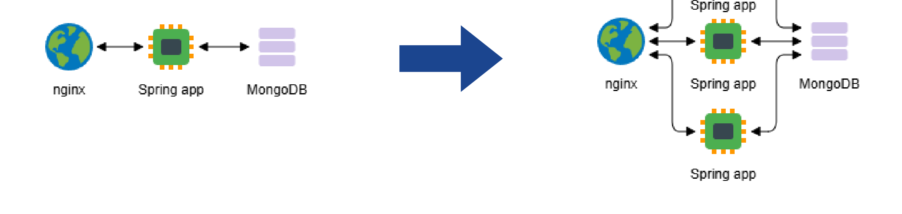
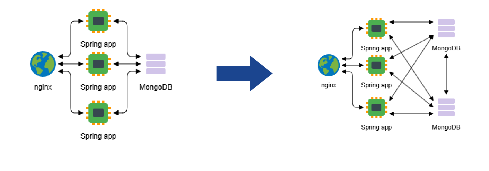
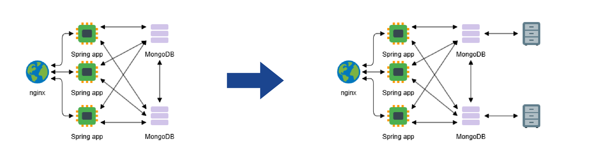
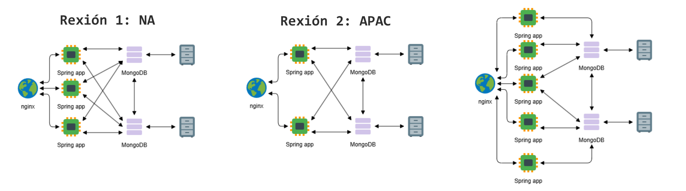
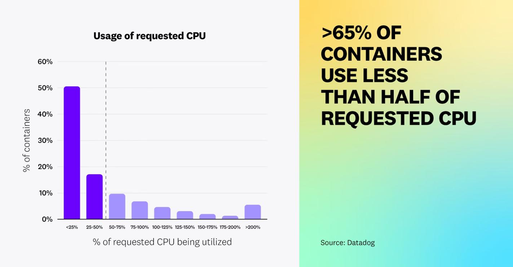
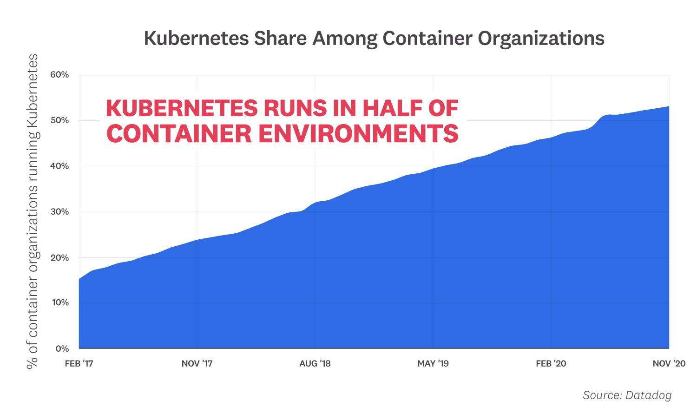
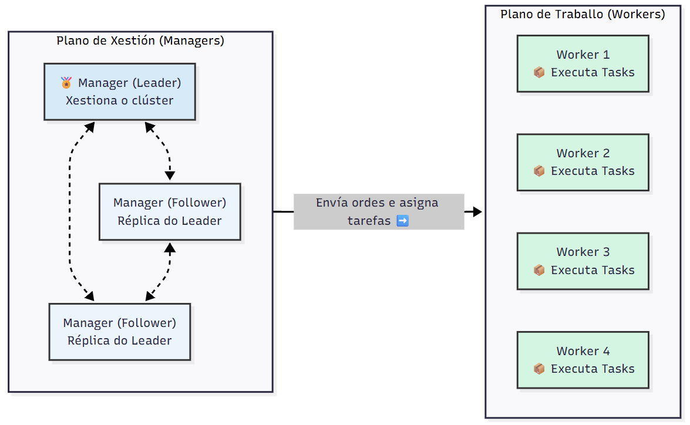
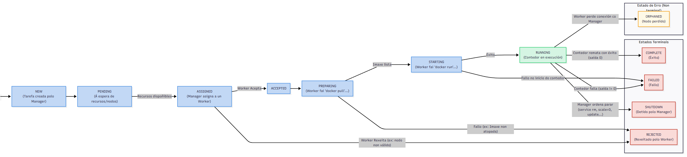
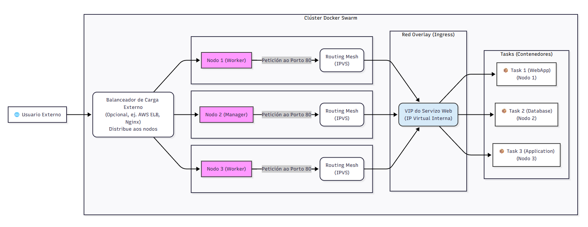
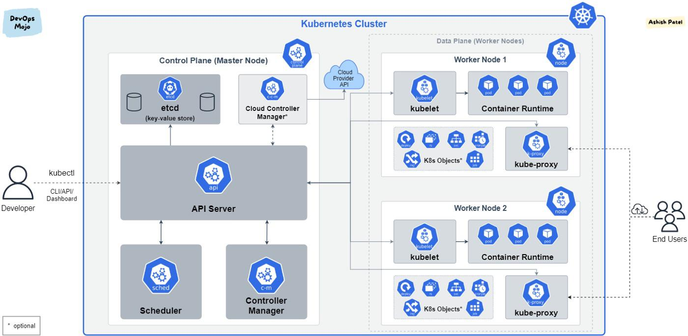

Orquestación de contenedores
Tema 4 de 6 Cuarto curso, 1.º cuatrimestre ≈ 31 min de lectura
Temas de COMPNU · 4/6
4.1 Motivación: por qué hace falta orquestar
Imagina una aplicación web sencilla con tres componentes: un servidor web (nginx), una aplicación Java (Spring) y una base de datos (MongoDB). Cada uno corre en su propio contenedor, construido con su Dockerfile (FROM nginx, FROM eclipse-temurin:21 + app.jar, FROM mongo:8.0). La arquitectura son 3 "máquinas".
Ahora la aplicación triunfa y los usuarios se disparan: hay que escalar las instancias de Spring para atender más usuarios concurrentes.

Al tiempo, la base de datos se satura y también hay que escalarla: ahora cada instancia de Spring habla con varias réplicas de MongoDB.

Además, los contenedores de MongoDB son los "dueños" de los datos; si hay que recrear un contenedor se perderían, así que conviene persistirlos fuera del contenedor.

¿Y si además se quiere desplegar en varios servidores físicos o en varias regiones (NA, APAC, EUW)? A medida que crecen las funcionalidades, la gestión se complica exponencialmente.

La cadena es: muchos contenedores → muchas máquinas → mucho código → alto potencial de fallo. Y surgen preguntas difíciles de resolver a mano: ¿cuántos contenedores por servicio y por nodo?, ¿dónde coloco cada uno?, ¿cómo sé su estado?, ¿cómo sustituyo los que fallan?, ¿cómo actualizo versiones en marcha?, ¿cómo controlo a qué recursos accede cada servicio? La respuesta es la orquestación de contenedores.
Hay un segundo motivo: el desperdicio de recursos. Muchos entornos permiten reservar recursos mínimos por servicio, pero en la práctica más del 65 % de los contenedores usan menos del 50 % de la CPU solicitada, y lo mismo ocurre con la memoria (más del 65 % usa menos de la mitad de la reservada). Un orquestador puede repartir mejor esa capacidad ociosa.

La mayoría de contenedores está en la primera barra: usa menos del 25 % de la CPU que reservó.4.2 Qué es y cómo funciona la orquestación
La orquestación gestiona el ciclo de vida de los contenedores, sobre todo en entornos grandes y dinámicos. Sus tareas, con la propiedad que aportan:
- Aprovisionamiento y despliegue (configuración).
- Redundancia y disponibilidad (tolerancia a fallos).
- Distribución uniforme de la carga en la infraestructura (autoescalado).
- Mover contenedores si falla su host (tolerancia a fallos).
- Repartir la carga entre contenedores (balanceo de carga).
- Exponer los servicios al exterior (descubrimiento).
- Monitorizar la salud de contenedores y hosts (observabilidad).
Para funcionar, el orquestador usa uno o varios ficheros de configuración (normalmente YAML o JSON) que indican, entre otras cosas: el repositorio de donde sacar las imágenes, las redes para que los nodos se comuniquen, los volúmenes y cómo montarlos, y dónde guardar los logs de cada contenedor. Estos ficheros se versionan y bifurcan para desplegar en distintos entornos (desarrollo, pruebas, producción).
Los contenedores se despliegan en hosts, normalmente en grupos replicados. Cuando toca desplegar uno nuevo, el orquestador busca el host más adecuado del clúster según las restricciones del servicio (RAM, CPU o disco disponibles, etiquetas o metadatos, proximidad a otros hosts…). Una vez colocado, el orquestador gestiona su ciclo de vida según la configuración.
Analogía
El orquestador es el director de una orquesta: no toca ningún instrumento (no ejecuta tu código), pero decide cuántos violines hacen falta, dónde se sienta cada uno y sustituye al que se pone enfermo sin que el público lo note.
4.2.1 Estado actual
Cuanto más grandes y complejos los entornos, más imprescindible es orquestar: en 2020 casi el 90 % de los contenedores corrían en entornos orquestados, y Kubernetes se usaba en más del 50 % de los entornos.

4.3 Principales alternativas
4.3.1 Kubernetes (K8s)
Es el estándar absoluto de la industria y una plataforma de orquestación completa. Lo diseñó Google y hoy está bajo la Cloud Native Computing Foundation (CNCF), con licencia Apache 2.0 y una de las comunidades más activas de GitHub. Sus características:
- Configuración con un modelo declarativo muy robusto (describes el estado deseado, no los pasos).
- Autorreparación: reinicia servicios que fallan y recoloca los de nodos caídos.
- Autoescalado horizontal (crear/eliminar instancias) y vertical (más/menos recursos por instancia).
- Descubrimiento y balanceo de carga integrados.
- Gestión de configuración y secretos.
- Ecosistema de aplicaciones masivo.
Fortalezas: potencia y flexibilidad inigualables, la mayor comunidad y apoyo de la industria, independiente de la infraestructura. Debilidades: complejidad y curva de aprendizaje elevadas y mayor consumo de recursos.
4.3.2 Docker Swarm
Es la orquestación nativa de Docker, integrada en el motor y en la CLI: la opción más sencilla y accesible. Docker lo creó la empresa DotCloud en 2013 (luego renombrada Docker, Inc.); desde 2019 la división empresarial pertenece a Mirantis y las herramientas de desarrollo siguen en Docker, Inc. El motor es open source (Apache 2.0). Características:
- Integración nativa: mismos comandos y ficheros que Docker Compose.
- Configuración simple: crear un clúster son dos comandos.
- Balanceador de carga interno fácil de usar.
- Descubrimiento de servicios automático dentro del clúster.
Fortalezas: facilidad de uso extrema, ligereza (pocos recursos), ideal para proyectos pequeños donde prima la sencillez. Debilidades: funcionalidades limitadas, ecosistema y comunidad pequeños (la industria se ha consolidado en torno a Kubernetes) y futuro incierto.
4.3.3 Apache Mesos + Marathon
Solución de nivel industrial que combina Apache Mesos, que gestiona los recursos del clúster a muy bajo nivel, con Marathon, que orquesta los contenedores. Pensado para escala masiva y cargas de trabajo muy diversas (no solo contenedores). Licencia Apache 2.0; comunidad madura pero en declive, gestionada por la Apache Software Foundation. Características:
- Arquitectura de dos niveles: Mesos gestiona los recursos y Marathon los consume para ejecutar contenedores.
- Escalabilidad extrema: probado en clústeres de decenas de miles de nodos (Apple, Twitter).
- Cargas mixtas: contenedores junto a aplicaciones de Big Data en el mismo clúster, compartiendo recursos.
- Alta disponibilidad y tolerancia a fallos desde el diseño.
Fortalezas: la más capaz para entornos enormes, insuperable para unificar cargas heterogéneas, control granular de la asignación de recursos. Debilidades: gestión muy compleja (varios componentes que coordinar), comunidad en declive y sin la experiencia integrada de Kubernetes.
4.3.4 Comparativa y cuál elegir
| Kubernetes | Docker Swarm | Marathon (sobre Mesos) | |
|---|---|---|---|
| Complejidad | Alta | Baja | Muy alta |
| Ideal para | Aplicaciones complejas, multinube, estándar de la industria | Desarrollos sencillos, prototipado rápido, equipos pequeños | Escala masiva, cargas mixtas (Big Data + contenedores) |
| Escalabilidad | Muy alta | Alta | Extrema |
| Comunidad | Enorme y creciendo | Moderada y estancada | Madura (en declive para contenedores) |
| Ecosistema | Inmenso | Limitado | Limitado |
| Flexibilidad | Muy alta | Baja | Muy alta |
| Configuración | Declarativa (YAML complejos) | Declarativa (docker-compose) | API REST / UI |
- Kubernetes en el 90 % de los casos: es el estándar, el más apoyado y la apuesta más segura.
- Docker Swarm si la prioridad absoluta es la sencillez, no necesitas funciones avanzadas y quieres algo funcionando en minutos.
- Marathon + Mesos solo ante escala extrema (decenas de miles de nodos) o para compartir un clúster entre contenedores y aplicaciones pesadas como Spark o Hadoop. Para la mayoría está sobredimensionado.
4.4 Docker Swarm
Swarm ("enjambre") está integrado en el motor de Docker y basado en Docker Compose; se maneja con el cliente estándar de Docker. Su función principal es gestionar un clúster de varios hosts Docker como si fuesen uno solo. Los servicios se definen en un YAML con la misma sintaxis que Docker Compose, así que una configuración local se reutiliza tal cual en un clúster distribuido.
4.4.1 Arquitectura
Es una arquitectura manager-worker:
- Managers: mantienen el estado del clúster, deciden dónde desplegar cada contenedor y gestionan el escalado y la calidad de servicio. Si un nodo entra en mantenimiento, recrean sus tareas en otro y redistribuyen la carga; gestionan recursos (nombres DNS, IPs, contenedores, servicios), balancean los contenedores entre workers y notifican el estado de los servicios.
- Workers: ejecutan las tareas que les asigna el líder.
Un clúster tiene al menos un manager y tantos workers como se quiera; un manager puede hacer también de worker. Si hay varios managers, uno es el líder (elegido automáticamente) y toma todas las decisiones; el resto son seguidores (followers), réplicas pasivas listas para tomar el control si el líder cae. En producción se recomiendan al menos 3 managers.

4.4.2 Crear el enjambre y añadir nodos
Basta un comando en el host que será manager (docker swarm init); Docker responde con el comando que deben ejecutar los workers para unirse (docker swarm join --token …). Al hacer init ocurre lo siguiente:
- El motor pasa a modo Swarm.
- Se crea una Autoridad de Certificación raíz (CA) del clúster, que firmará los certificados de todos los nodos futuros: así toda la comunicación entre nodos va cifrada.
- Se inicializa la base de datos Raft, distribuida, que guarda el estado del clúster (de momento con un solo miembro).
- El nodo se autoproclama líder (es el único); los futuros managers serán followers.
- Se crean dos redes por defecto:
ingress(para el balanceador de carga integrado) ydocker_gwbridge(para que los contenedores salgan al exterior). - Se generan y guardan dos tokens secretos: worker token y manager token (con más privilegios).
Añadir un worker: se ejecuta el comando de join (si se ha perdido el token, se recupera desde un manager con docker swarm join-token worker). Pasos:
- El worker contacta con el manager usando el token de worker.
- El líder valida el token y genera un certificado de identidad exclusivo para ese nodo con la CA raíz.
- El líder registra al worker en la BD y lo marca disponible.
- El worker instala su certificado; desde ahí toda la comunicación usa el certificado y el token se descarta.
- El motor del worker pasa a modo Swarm.
- Se abre una conexión segura y persistente con el líder; el worker envía un heartbeat y el líder lo marca como listo.
Añadir un manager es igual pero con el token de manager (docker swarm join-token manager), y con dos pasos extra al final: el nuevo manager replica la BD completa del enjambre desde los managers existentes y se sincroniza en tiempo real con el líder antes de marcarse listo.
Para abandonar el enjambre: docker swarm leave. Si se va el último manager, el enjambre se destruye, por eso hay que añadir --force.
4.4.3 Gestión de nodos
Desde cualquier manager, docker node ls muestra los nodos y docker node inspect <nodo> --pretty sus detalles (estado, rol, dirección, CPU, memoria, plugins…). Dos columnas importantes:
| AVAILABILITY (¿puede recibir tareas?) | MANAGER STATUS (¿cómo decide?) |
|---|---|
| Active: el planificador puede asignarle tareas nuevas | Leader: el líder, hace toda la orquestación |
| Pause: no recibe tareas nuevas, pero las que tiene siguen | Reachable: manager elegible como nuevo líder |
| Drain: no recibe tareas nuevas y las suyas se migran a otro nodo | Unavailable: manager que no puede comunicarse con los demás |
| (vacío): no es manager |
docker node promote <id> convierte un worker en manager; docker node demote <id>, al revés.
4.4.4 Servicios y tareas
En un enjambre las imágenes se despliegan como servicios (una BD, un servidor HTTP, un proxy, una app Java…). Al crear uno se indica la imagen y los comandos, y opcionalmente los puertos expuestos, la red, límites de memoria y CPU, políticas de actualización o el número de réplicas. El líder toma esa definición como estado objetivo y crea las tareas necesarias en los nodos para alcanzarlo.
Una tarea es la unidad atómica del planificador: un hueco al que asocia un único contenedor. Sus estados:

El recorrido normal es NEW (creada por el manager) → PENDING (esperando recursos) → ASSIGNED (asignada a un worker) → ACCEPTED → PREPARING (docker pull) → STARTING (docker run) → RUNNING. Desde ahí acaba en un estado terminal: COMPLETE (salida 0), FAILED (fallo al iniciar o salida ≠ 0), SHUTDOWN (el manager la para: service rm, scale=0, update…) o REJECTED (el worker la rechaza o falla la preparación, p. ej. imagen no encontrada). Si el worker pierde conexión con el manager, queda ORPHANED (error no terminal).
Si una tarea falla, el orquestador elimina tarea y contenedor y crea una nueva según la configuración del servicio. Orquestador y planificador son genéricos: las abstracciones de servicio y tarea no saben qué ejecutan (podrían ser VMs…), aunque Docker hoy solo implementa tareas con contenedores.
Un servicio queda pendiente cuando ningún nodo puede ejecutar sus tareas: por ejemplo, todos los workers están en pause o drain, o ninguno cumple los recursos pedidos. Sigue pendiente hasta que aparezca un nodo válido.
4.4.5 Desplegar servicios
Hay dos tipos:
- Replicados: se fija un número de tareas idénticas repartidas entre los nodos.
- Globales: una tarea en cada nodo; al añadir un nodo nuevo se le crea automáticamente su tarea (útil para agentes de monitorización).
Los servicios se definen de forma declarativa (el estado objetivo) y Docker lo mantiene: imagen, número de contenedores, puertos expuestos, condiciones de reinicio automático y requisitos de los nodos.
El despliegue más básico es docker service create nginx (una réplica; --name para darle nombre; docker service ls para ver el estado). Para algo más complejo se usa un fichero estilo Compose y docker stack deploy -c <fichero> <nombre_stack>:
version: '3.8'
services:
web:
image: nginx:alpine
ports: ["80:80"]
networks: [rede-aplicacion]
depends_on: [app]
deploy:
replicas: 3 # tres tareas idénticas
update_config:
parallelism: 1 # actualiza de una en una
delay: 10s # espera entre tareas
restart_policy:
condition: on-failure
networks:
rede-aplicacion:
driver: overlay # red que abarca todos los nodos
4.4.6 Puertos y balanceo de carga
Un puerto se puede publicar de dos formas:
- Routing mesh: el puerto queda disponible en todos los nodos; si un cliente se conecta a cualquiera, el mesh redirige la petición a una tarea del servicio. El cliente no necesita saber dónde corre el contenedor.
- Publicación directa: el puerto solo se abre en el nodo que ejecuta la tarea; el cliente debe conocer la IP de ese nodo.
Gracias al routing mesh, Swarm trae un balanceador interno: el puerto se publica en cada nodo aunque no ejecute el servicio, y la red de enrutamiento intercepta la petición y la manda a un contenedor del servicio esté donde esté. Esto permite poner delante un balanceador externo (AWS ELB, nginx) que reparta entre todos los nodos.

El balanceador externo reparte entre nodos; en cada nodo el routing mesh (IPVS) envía la petición por la red overlayingress a la IP virtual del servicio, que la entrega a una de sus tareas.
Internamente los servicios se llaman por su nombre. Swarm asigna a cada servicio una IP virtual (VIP): el DNS interno devuelve la VIP y el kernel reparte el tráfico entre las IPs reales de las tareas con Round Robin. Alternativa sin VIP: el DNS devuelve todas las IPs del servicio y el cliente elige a cuál llamar.
4.4.7 Redes overlay y almacenamiento
Para que contenedores en nodos distintos se comuniquen como si estuvieran en el mismo, se crea una red overlay: una red virtual implementada como un túnel que actúa como un switch al que se conectan todos los contenedores del stack.
docker network create --driver overlay rede1
docker service create --network rede1 --name web nginx
docker service update --network-add rede1 web
En el fichero de configuración se definen con networks.<red>.driver y services.<servicio>.networks.
Swarm soporta los mismos tipos de almacenamiento que Docker local (ver tema 2): volúmenes (gestionados por Docker en el sistema de ficheros del host), bind mounts (rutas del host montadas en el contenedor) y tmpfs (en memoria, nunca a disco). El problema: los contenedores cambian de nodo, pero los volúmenes se quedan en el host donde se crearon. La solución es un plugin con driver de almacenamiento en red (NFS, volúmenes cloud, sistemas de ficheros distribuidos…).
4.4.8 Requisitos y preferencias de despliegue
Se pueden exigir requisitos a los nodos:
- Recursos:
--reserve-memoryy--reserve-cpupor terminal, odeploy.resources.reservations.cpus/memoryen el fichero. - Restricciones por etiquetas (región, SO, procesador, tipo de almacenamiento, GPU…):
--constraintodeploy.placement.constraints.
Si ningún nodo los cumple, el servicio queda pendiente.
Las preferencias (--placement-pref o deploy.placement.preferences) reparten las réplicas según etiquetas: el orquestador agrupa los nodos por el valor de la etiqueta y distribuye entre grupos. Hay que indicar estrategia, y la única soportada es spread (reparto uniforme). A diferencia de los requisitos, si ningún nodo cumple la preferencia, se despliega igualmente ignorándola.
El estado se consulta desde cualquier manager (docker stack ps <stack>, docker service ls).
4.4.9 Escalado, actualización y rollback
Escalar es ajustar el número de réplicas; el líder mantiene ese número repartiendo tareas:
docker service update --replicas <N> <SERVICIO>
docker service scale <SERVICIO>=<N>
Actualizar un servicio sin redesplegar toda la aplicación y con mínima interrupción: docker service update --image <IMAGEN:VERSION> <SERVICIO>. Se hace por etapas: se para la primera tarea → se planifica su actualización → se reinicia su contenedor actualizado → si arranca bien, se sigue con la siguiente → si hay error, se para la actualización.
Parámetros de la estrategia de actualización:
- update delay: espera entre tareas.
- update parallelism: tareas actualizadas a la vez.
- update failure action: qué hacer si falla:
pause,continue(ignorar) orollback(volver a la versión previa). - update max failure ratio: proporción máxima de fallos admitida.
Rollback: docker service update --rollback revierte al estado anterior al último update; suele combinarse con --update-delay 0 para que sea instantáneo. También se puede configurar una estrategia de rollback al crear el servicio para que vuelva solo si una actualización falla.
Para entenderlo mejor
Swarm mode key concepts — documentación oficial: nodos, servicios, tareas y balanceo (artículo, inglés).
4.5 Kubernetes
Kubernetes lo diseñó Google y se liberó en 2014; hoy es el proyecto estrella de la CNCF (Google, Alibaba, Amazon, Microsoft, Apple, IBM, Intel, Cisco, RedHat, Oracle, Huawei…). El nombre significa "piloto de barco" en griego (de ahí el timón del logo) y se abrevia k8s (k + 8 letras + s). Gestiona cómputo, redes y almacenamiento y es el estándar de facto.
También es manager-worker:
- Managers: gestionan los nodos, detectan y responden a eventos y se aseguran de que el estado real coincida con el deseado.
- Workers: ejecutan las aplicaciones (varias por nodo).
Mínimo un manager; se recomienda un número impar de managers (para facilitar el quórum en las votaciones) y varios workers (disponibilidad).

4.5.1 Componentes del manager (plano de control)
- API server (
kube-apiserver): expone la API de k8s como API REST; es la puerta de entrada al clúster, gestiona autenticación y autorización y hace de túnel hacia los nodos. Admite varias instancias para balancear. - Scheduler (
kube-scheduler): decide en qué nodo se ejecuta cada contenedor según los recursos libres y los pedidos. Puede haber varios. - Controller manager (
kube-controller-manager): el cerebro; intenta que el estado de las aplicaciones coincida con el deseado. Agrupa varios controladores independientes:- De nodos: vigila la salud de los nodos y mueve aplicaciones si uno falla.
- De réplicas: asegura que el número de instancias coincide con el deseado.
- De despliegue: actualiza versiones de forma controlada.
- De endpoints: relaciona las IPs de los contenedores con los nombres de los servicios (como un DNS).
- etcd: BD clave/valor simple, distribuida y consistente con la configuración compartida del clúster; también sirve para descubrir servicios. Usa un algoritmo de consenso para replicarse entre managers.
- (Opcional) Cloud controller manager: intermediario con el proveedor cloud (AWS, GCP, Azure) para crear rutas, balanceadores o volúmenes directamente allí.
Los componentes pueden ir en cualquier máquina, pero por simplicidad se arrancan todos en la misma, que no suele hacer de worker.
4.5.2 Componentes del worker
- kubelet: el agente que habla con los managers, obtiene la configuración de las aplicaciones y garantiza que sus contenedores funcionen.
- kube-proxy: proxy de red; gestiona las reglas de enrutamiento del nodo para exponer cada servicio en su IP y puerto, y balancea la carga entre ellos.
- Container runtime: descarga imágenes y arranca contenedores. Ofrece una CRI (Container Runtime Interface), puente entre kubelet y el runtime. Opciones:
| Runtime | Rasgos |
|---|---|
| containerd | Formato OCI. Estándar de la industria y opción por defecto; creado por Docker y cedido a la CNCF. Robusto y eficiente |
| CRI-O | Formato OCI. Creado por RedHat específicamente para k8s; ligero y fiel a sus especificaciones |
| kata | Ejecuta cada contenedor como una VM ligera con su propio kernel: aislamiento a nivel hardware, mucho más seguro, a costa de más CPU y memoria |
- Pods: "las aplicaciones" que ejecuta el worker. Un pod es una colección lógica de contenedores más los recursos que comparten (volúmenes, red, contexto). Es la unidad mínima de trabajo en k8s. Tipos de cargas que gestionan pods:
| Tipo | Para qué |
|---|---|
| ReplicaSet | Apps sin estado: siempre N réplicas idénticas activas |
| DaemonSet | Agentes de infraestructura: uno en cada nodo |
| StatefulSet | Apps con estado (BD): cada pod tiene identidad única y almacenamiento persistente |
| Job / CronJob | Tareas con inicio y fin; CronJob permite programarlas |
Analogía
El clúster es un puerto: el plano de control es la torre de control (API server = ventanilla única, scheduler = quien asigna muelle, controller manager = supervisor que corrige desvíos, etcd = el libro de registro). Cada worker es un muelle con su capataz (kubelet), su operador de tráfico (kube-proxy) y sus grúas (runtime). Los pods son los contenedores de mercancía.
Para entenderlo mejor
Entiende la Arquitectura de Kubernetes (Control Plane, Nodos, etcd) — recorrido por cada componente (vídeo, 8 min). Componentes de Kubernetes — documentación oficial en español (artículo).
4.5.3 Herramientas: kubeadm y kubectl
kubeadm es el "kit de montaje": arranca, instala y configura los componentes del clúster (kubeadm init crea el manager, kubeadm join une workers, kubeadm upgrade actualiza la versión). Requisitos:
- Mínimo 2 nodos Linux (un manager y un worker), con 2 vCPU y 2 GB de RAM cada uno.
- Conectividad plena entre nodos con estos puertos abiertos:
| Nodo | Puertos |
|---|---|
| Manager | 6443/TCP (kube-apiserver), 2379-2380/TCP (etcd), 10250/TCP (kubelet API), 10259/TCP (kube-scheduler), 10257/TCP (kube-controller-manager) |
| Worker | 10250/TCP (kubelet API), 10256/TCP (kube-proxy), 30000-32767/TCP y UDP (servicios) |
- Nombres de host, direcciones MAC y
product_uuidúnicos en cada nodo.
kubectl es el "mando a distancia" de un clúster ya en marcha: habla con el kube-apiserver, que luego crea, planifica y distribuye las tareas.
| Comando | Para qué |
|---|---|
kubectl apply |
Desplegar aplicaciones |
kubectl get |
Ver los recursos desplegados |
kubectl logs |
Ver logs |
kubectl describe |
Estado detallado de un recurso |
kubectl drain |
Preparar un nodo para mantenimiento |
kubectl exec |
Ejecutar un comando en un contenedor de un pod |
4.5.4 Crear y gestionar el clúster
Pasos para montar un clúster con kubeadm:
- Desactivar el SWAP en todos los nodos.
- Configurar red, firewall y tablas de enrutamiento para que todos se vean.
- Instalar un runtime en cada nodo (containerd lo habitual; CRI-O otra opción).
- Instalar kubeadm, kubectl y kubelet en cada nodo.
- Iniciar el plano de control en un manager con
kubeadm init. - Configurar kubectl en el manager para usarlo como administrador.
- Instalar un plugin de red.
- Unir los workers.
- Validar el estado de componentes y nodos.
Sin clúster propio, lo más práctico son los servicios gestionados de las nubes (GKE de GCP, AKS de Azure, EKS de AWS), que crean clústeres en minutos.
En kubeadm init es crucial --pod-network-cidr: el rango de IPs de los pods, que depende del plugin de red elegido. --control-plane-endpoint fija el endpoint compartido por todos los managers. Los tokens se consultan o crean con kubeadm token.
kubeadm no instala ningún plugin de red: hay que desplegar uno externo como pod.
| Plugin | Cómo funciona | Rendimiento | Políticas de red | Pegas |
|---|---|---|---|---|
| Flannel | Red overlay virtual | Pequeña penalización | No soporta (inseguro) | — Es el más sencillo |
| Calico | Enrutamiento con BGP, sin red virtual | Casi nativo | Muy granulares L3/L4 (IPs y puertos) | — Es el más popular en producción |
| Cilium | eBPF: programas de red dentro del kernel Linux | Igual o superior al nativo | L3/L4 y L7 (reglas de HTTP…), además service mesh | El más complejo; necesita kernels modernos |
| Antrea | Switch virtual OVS (Open vSwitch) | Muy bueno, como Calico | L3/L4/L7 (Cilium más maduro) | El más nuevo; curva de aprendizaje por OVS |
Añadir workers: ejecutar el comando que dio kubeadm init. Añadir managers requiere más pasos y conviene haber configurado un balanceador de carga al crear el clúster: obtener los certificados del plano de control (kubeadm init phase upload-certs --upload-certs) y unirse con kubeadm join --control-plane --certificate-key <clave>.
Sacar un nodo: primero drenarlo para que sus pods se muevan (kubectl drain <nodo> --delete-local-data --force --ignore-daemonsets), luego kubectl delete node <nodo> y finalmente kubeadm reset en el nodo.
Para desarrollo local existe minikube, que funciona sobre kubeadm y lo simplifica: Linux, Windows y macOS, soporte de GPU, despliegue en VMs, contenedores o bare metal, addons fáciles y funciones como balanceadores, políticas de red o montaje de sistemas de ficheros. Se arranca con minikube start.
4.5.5 Espacios de nombres
Los namespaces separan recursos: no comparten nada entre sí, útil cuando varios usuarios o equipos usan el mismo clúster. Se listan con kubectl get namespace y se crean con kubectl create namespace <nombre>. En producción se recomienda uno por aplicación. Los cuatro iniciales:
| Namespace | Uso |
|---|---|
default |
Objetos sin namespace explícito. No recomendado en producción |
kube-system |
Objetos del sistema y del plano de control. No desplegar aplicaciones aquí |
kube-public |
Legible por todos (incluso no autenticados); reservado al clúster |
kube-node-lease |
Los leases que envían los latidos de cada nodo al plano de control. Uso interno |
4.5.6 Comunicación y servicios
Hay cuatro tipos de comunicación:
- Dentro de un pod: los contenedores comparten la pila de red y se hablan por
localhosty puerto. - Entre pods: cada pod tiene una IP privada única asignada por el plugin de red, que enruta el tráfico (overlay, BGP, eBPF…).
- Pod → servicio: los pods son efímeros y su IP cambia, así que no se puede depender de ella. Por eso existen los servicios, que dan IP virtual y nombre DNS estables a un conjunto de pods.
- Externa: el tráfico de entrada (ingress) llega por un proxy o balanceador; el de salida (egress) sale directo, con el plugin enmascarando la IP interna del pod para que la respuesta vuelva.
Un servicio es una abstracción sobre un conjunto de pods que hace de proxy. Usa selectores (etiquetas) para saber qué pods lo forman; al recibir una petición elige uno de ellos y se la reenvía, y añade o quita pods automáticamente cuando aparecen o desaparecen pods con esas etiquetas.
| Tipo de servicio | Qué hace |
|---|---|
| ClusterIP (por defecto) | IP interna: solo accesible desde dentro del clúster |
| NodePort | ClusterIP + publica un puerto (30000-32767) en todos los nodos. Para pruebas, no para producción |
| LoadBalancer | NodePort + pide al proveedor cloud un balanceador externo con IP pública |
| ExternalName | No apunta a pods: crea un alias DNS interno hacia un servicio externo |
4.5.7 Ingress
Un Ingress no es un servicio: es otro tipo de objeto con reglas de enrutamiento que permite el tráfico desde fuera. Funciona como gateway: expone varios servicios bajo una única IP pública y ofrece redirección a distintos servicios, autenticación, certificados SSL, cuotas… Necesita un ingress controller:
| Controller | Rasgos |
|---|---|
| ingress-nginx | El más usado y documentado, basado en nginx, muy potente; soporte limitado para configuraciones avanzadas |
| Traefik Proxy | El más moderno y automático: certificados SSL con Let's Encrypt y dashboard potente; para lo avanzado usa objetos propios no estándar |
| HAProxy Ingress | Muy probado, superestable y rápido con alta carga; menos extensiones |
| Kong | API gateway sobre nginx con plugins (autenticación, cuotas…); muchas funciones avanzadas son de pago |
| APISIX | API gateway de alto rendimiento de la Apache Software Foundation, rival de Kong; open source y extensible, comunidad aún pequeña |
La evolución del Ingress es la Gateway API, que uniformiza la definición de políticas en los gateways.
4.5.8 Descubrimiento de servicios
- Variables de entorno: al arrancar un pod, kubelet le añade
{SVCNAME}_SERVICE_HOSTy{SVCNAME}_SERVICE_PORTpor cada servicio activo. - DNS (recomendado): un servicio DNS del clúster vigila el API server y registra cada servicio nuevo con su nombre y namespace. Ha habido dos: kube-dns (hoy deprecated) y CoreDNS (el que debe usarse).
4.5.9 Desplegar aplicaciones
Se puede usar kubectl create deployment, pero lo habitual son YAML + kubectl apply. Un ejemplo completo con Deployment, Service e Ingress:
apiVersion: apps/v1
kind: Deployment
metadata: { name: test-app-deployment }
spec:
replicas: 3
selector: { matchLabels: { app: test-app } } # qué pods gestiona
template: # plantilla de cada pod
metadata: { labels: { app: test-app } }
spec:
containers:
- name: nginx-container
image: nginx:1.25
ports: [{ containerPort: 80 }]
---
apiVersion: v1
kind: Service
metadata: { name: test-app-service }
spec:
type: ClusterIP
ports: [{ port: 80, targetPort: 30080 }]
selector: { app: test-app } # agrupa los pods con esa etiqueta
---
apiVersion: networking.k8s.io/v1
kind: Ingress
metadata:
name: test-app-ingress
annotations: { nginx.ingress.kubernetes.io/rewrite-target: / }
spec:
rules:
- host: "test-app.exemplo.com"
http:
paths:
- path: /
pathType: Prefix
backend: { service: { name: test-app-service, port: { number: 30080 } } }
Posible errata de las diapositivas
El contenedor escucha en el 80, así que lo coherente sería targetPort: 80 en el Service y port: number: 80 en el Ingress (el puerto del Service). El 30080 parece venir de un ejemplo con NodePort.
4.5.10 Estrategias de despliegue y actualización
| Estrategia | Cómo funciona | Pega / uso |
|---|---|---|
| Recrear | Se matan todos los pods a la vez y se reemplazan | Tiempo sin servicio prolongado |
| Rolling update | Los pods se recrean uno tras otro, sin cortes | Difícil gestionar rollbacks si falla |
| Azul/verde | Se despliegan las dos versiones; la nueva se prueba internamente y, cuando está lista, el Service pasa a apuntar a ella | Necesita el doble de recursos durante el cambio |
| Canary | Un porcentaje del tráfico va a la nueva versión y el resto a la antigua (dos despliegues con el mismo nombre de app) | Probar funcionalidades nuevas con riesgo acotado |
| A/B | Como canary, pero el tráfico nuevo es el de usuarios que cumplen ciertas condiciones | Experimentos por segmento |
| Sombra / espejo | Ambas versiones reciben todo el tráfico, pero solo cuentan las respuestas de la original | Probar con tráfico real sin afectar al usuario |
Analogía
Canary viene de los canarios que bajaban a las minas: si el pájaro enfermaba, había gas. Mandas un poco de tráfico a la versión nueva y, si "enferma", nadie más baja.
Para entenderlo mejor
Deployment Strategies Explained: Blue-Green vs. Canary vs. Rolling — comparación visual de las estrategias (vídeo, 4 min, inglés).
4.5.11 Almacenamiento
Como los pods son efímeros, la clave es desacoplar el almacenamiento del ciclo de vida del pod con cuatro conceptos: Volumes, PersistentVolumes (PV), PersistentVolumeClaims (PVC) y StorageClass (SC).
- Volume: lo más básico. Puede ser una carpeta del host (
hostPath), una ruta NFS, un proveedor cloud… Si es una carpeta local, solo existe en ese nodo y no es accesible desde otros. - PersistentVolume: como un disco duro virtual con un tamaño y un modo de acceso, vinculado a almacenamiento físico (carpeta del host, sistema distribuido, cloud).
- PersistentVolumeClaim: una "reclamación" que hace un servicio para usar un PV que cumpla ciertos requisitos.
- StorageClass: en lugar de crear el PV a mano, se aprovisiona automáticamente con un proveedor (p. ej. AWS EBS) o con soluciones self-hosted como Longhorn.
Analogía
El PV es una plaza de garaje que existe; el PVC es tu solicitud ("necesito una plaza de 20 GB"); la StorageClass es un garaje que construye la plaza en el momento en que la pides.
4.x Ideas clave
- Orquestar = gestionar el ciclo de vida de muchos contenedores en muchas máquinas: despliegue, tolerancia a fallos, autoescalado, balanceo, descubrimiento y observabilidad, a partir de ficheros YAML/JSON declarativos.
- Motivación extra: >65 % de los contenedores usan <50 % de la CPU y memoria reservadas. En 2020, ~90 % de contenedores orquestados y k8s en >50 %.
- Kubernetes (estándar, potente, complejo), Docker Swarm (sencillo, ligero, limitado), Mesos + Marathon (escala extrema y cargas mixtas, complejo, en declive). K8s en el 90 % de los casos.
- Swarm: managers (líder + followers, ≥3 en producción, BD Raft, CA para cifrar) y workers; tokens de worker y manager. Disponibilidad Active / Pause / Drain. Servicio → tareas (un contenedor cada una); servicios replicados o globales;
docker stack deploy. - Swarm red: routing mesh (puerto en todos los nodos) y VIP + Round Robin; redes overlay; volúmenes locales al nodo → driver en red. Requisitos (si no se cumplen, pendiente) vs preferencias
spread(se ignoran). Rolling update con delay, parallelism, failure action y--rollback. - K8s plano de control: API server, scheduler, controller manager (nodos, réplicas, despliegue, endpoints), etcd, cloud controller manager. Worker: kubelet, kube-proxy, runtime (containerd, CRI-O, kata) y pods.
- Cargas: ReplicaSet (sin estado), DaemonSet (uno por nodo), StatefulSet (con estado), Job/CronJob.
- kubeadm monta el clúster (2 nodos, 2 vCPU, 2 GB, sin swap); kubectl lo maneja; minikube para local. Plugins de red: Flannel (sencillo, sin políticas), Calico (BGP, producción), Cilium (eBPF, L7), Antrea (OVS).
- Servicios: ClusterIP, NodePort (30000-32767), LoadBalancer, ExternalName; Ingress + controller como gateway (evoluciona a Gateway API); descubrimiento por DNS (CoreDNS).
- Despliegues: recrear, rolling update, azul/verde, canary, A/B, sombra.
- Almacenamiento: Volume → PV → PVC → StorageClass (aprovisionamiento automático).